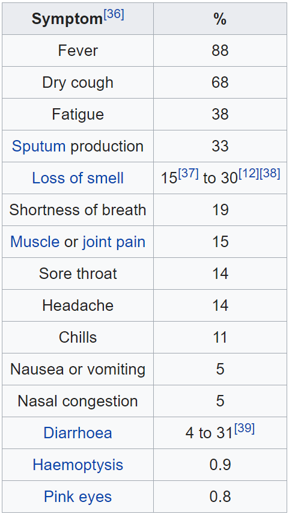
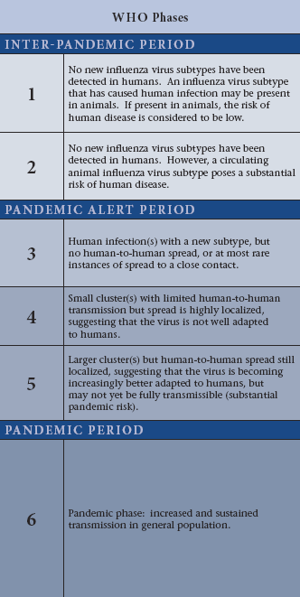
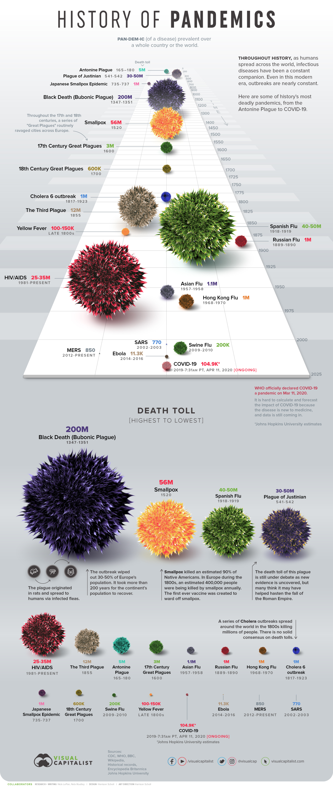

ALL ABOUT COVID 19
Coronavirus Disease 2019
Coronavirus disease 2019 (COVID-19) is an infectious disease caused by severe acute respiratory syndrome coronavirus 2 (SARS-CoV-2). The disease was first identified in December 2019 in Wuhan, the capital of China's Hubei province, and has since spread globally, resulting in the ongoing 2019–20 coronavirus pandemic. Common symptoms include fever, cough and shortness of breath. Other symptoms may include fatigue, muscle pain, diarrhoea, sore throat, loss of smell and abdominal pain. The time from exposure to onset of symptoms is typically around five days, but may range from two to fourteen days. While the majority of cases result in mild symptoms, some progress to viral pneumonia and multi-organ failure. As of 11 April 2020, more than 1.69 million cases have been reported in more than 200 countries and territories, resulting in more than 102,000 deaths. More than 376,000 people have recovered.
The virus is mainly spread between people during close contact, often via small droplets produced during coughing, sneezing, or talking. While these droplets are produced when breathing out, they usually fall to the ground or surfaces rather than being infectious over large distances. People may also become infected by touching a contaminated surface and then their face. The virus can survive on surfaces for up to 72 hours. Coronavirus is most contagious during the first three days after onset of symptoms, although spread may be possible before symptoms appear and in later stages of the disease.
The standard method of diagnosis is by real-time reverse transcription polymerase chain reaction (rRT-PCR) from a nasopharyngeal swab. Chest CT imaging may also be helpful for diagnosis in individuals were there is a high suspicion of infection based on symptoms and risk factors but is not recommended for routine screening.
Recommended measures to prevent infection include frequent hand washing, maintaining physical distance from others (especially from those with symptoms), covering coughs and sneezes with a tissue or inner elbow and keeping unwashed hands away from the face. The use of masks is recommended for those who suspect they have the virus and their caregivers. Recommendations for mask use by the general public vary, with some authorities recommending against their use, some recommending their use and others requiring their use. Currently, there is no vaccine or specific antiviral treatment for COVID-19. Management involves treatment of symptoms, supportive care, isolation and experimental measures.
The World Health Organization (WHO) declared the 2019–20 coronavirus outbreak a Public Health Emergency of International Concern (PHEIC) on 30 January 2020 and a pandemic on 11 March 2020. Local transmission of the disease has been recorded in many countries across all six WHO regions.
Signs and symptoms

Those infected with the virus may be asymptomatic or develop flu-like symptoms, including fever, cough, fatigue,
and shortness of breath. Emergency symptoms include difficulty breathing, persistent chest pain or
pressure, confusion, difficulty waking and bluish face or lips; immediate medical attention is advised if these
symptoms are present. Less commonly, upper respiratory symptoms, such as sneezing, runny nose or sore throat
may be seen. Symptoms such as nausea, vomiting and diarrhoea have been observed in varying
percentages. Some cases in China initially presented only with chest tightness and palpitations.
In March 2020 there were reports indicating that loss of the sense of smell (anosmia) may be a common symptom
among those who have mild disease, although not as common as initially reported. In some, the
disease may progress to pneumonia, multi-organ failure and death. In those who develop severe symptoms,
time from symptom onset to needing mechanical ventilation is typically eight days.
As is common with infections, there is a delay between the moment when a person is infected with the virus and
the time when they develop symptoms. This is called the incubation period. The incubation period for COVID-19 is
typically five to six days but may range from two to 14 days. 97.5% of people who develop symptoms will
do so within 11.5 days of infection.
Reports indicate that not all who are infected develop symptoms, but their role in transmission is unknown.
Preliminary evidence suggests asymptomatic cases may contribute to the spread of the disease. The
proportion of infected people who do not display symptoms is currently unknown and being studied, with the Korea
Centers for Disease Control and Prevention (KCDC) reporting that 20% of all confirmed cases remained
asymptomatic during their hospital stay. China's National Health Commission began including asymptomatic
cases in its daily cases on 1 April, of the 166 infections on that day, 130 (78%) were asymptomatic.
What measures is each EU country taking?
Major measures taken in the EU to stop the spread of coronavirus!
The coronavirus (COVID-19) outbreak has spread to different regions in Europe. Member states are taking
similar - but different - courses of action to fight the spread of coronavirus, despite the efforts of the
European Commission to coordinate a common EU response.
The role of the commission is mainly to support EU countries and provide recommendations based on scientific
evidence and proportionality.
However, member states are taking largely uncoordinated, piecemeal and even contradictory measures - which
ultimately might undermine the common efforts to fight the outbreak.
Last week, EU health ministers urge solidarity after Germany, France, and the Czech Republic blocked the
export of anti-virus gear.
Likewise, some member states are reintroducing border controls or even closing border for non-nationals.
In Europe, all member states have registered cases of coronavirus, although there are major differences
between eastern and western countries.
However, the most affected country is Italy which represents about 58 percent of EU's cases - followed by
Spain, Germany and France.
According to the European Centre for Disease Prevention and Control (ECDC), the risk of infection is moderate
for the general population and high for older adults and individuals with chronic underlying conditions.
The EU-27 leaders held a teleconference on Tuesday (10 March) focusing on containing the spread of the virus
and mitigating the economic fallout.
Meanwhile, European markets plunged on Thursday (12 March) after investors were spooked by the European
Central Bank response, the Donald Trump travel ban on mainland Europe, and after the World Health Organisation
(WHO) officially declared coronavirus a global pandemic.
The WHO said on Friday that Europe has become the epicentre of the pandemic - with more reported cases and
deaths than the rest of the world combined.
In addition, the European Centre for Disease Prevention and Control believes that there is a high risk that
the EU's healthcare capacity "will be exceeded."
Non-essential travel to Europe will be banned for 30 days in an effort to contain the virus and encourage EU
leaders to reopen internal borders.
China has offered to send 2.2 million masks and 50,000 testing kits to the EU, commission president Ursula von
der Leyen said on Wednesday (18 March).
Netherlands
As of 10 April, there were 21762 cases of coronavirus registered in Netherlands. Netherlands has imposed a nationwide lockdown. The Netherlands closed borders for non-nationals. Some airlines cancelled flights to and from Italy, China and other European destinations. Events are not allowed until June. All bars and restaurants have been closed. Restrictions for shops. The Netherlands closed kindergartens, schools and universities until 6 April.
Belgium
As of 10 April, there were 24983 cases of coronavirus registered in Belgium. Belgium has imposed a nationwide lockdown until 19 April. Belgium closed borders for non-essential travelling. On Tuesday (17 March), Belgium imposed a ban on non-essential travel and restrictions on movement - exceptions will be allowed for doing exercise, professional needs, primary needs and health issues. Most airlines cancelled flights to risk areas, such as Italy or Spain. Belgium cancelled all events - although activities with family members living under the same roof are allowed. All shops, bars and restaurants have been closed, but supermarkets and pharmacies remain open. Belgium closed schools and universities.
Germany
As of 10 April, there were 118235 cases of coronavirus registered in Germany. Some German states have gone into partial lockdowns. Germany partially closed borders for non-nationals. Some airlines cancelled flights to and from Italy. Public gatherings are limited to two people. Most shops, bars and restaurants have been closed, but supermarkets and pharmacies remain open. Most kindergartens, schools and universities are closed in several regions.
Austria
As of 10 April, there were 13337 cases of coronavirus registered in Austria. All the 279 municipalities of Tyrol, and some in Corinthia, Salzburg, Gatein Valley, the GroBarl valley, and Vorarlberg. Austria partially closed borders. Austria suspended the entry of non-EU citizens entering Austria by air and EU citizens coming from Italy, Switzerland, Germany, Hungary or Slovenia - entry is only permitted if a medical health certificate can be presented. Train services are suspended between Austria and neighbouring countries, as well as air traffic from several countries. On 15 March, Austria imposed restrictions on movement - exceptions will be allowed for professional needs, primary needs and health issues. Public gatherings are limited to five people, while events are prohibited until June 2020. All shops, bars and restaurants have been closed, but supermarkets and pharmacies remain open. Austria closed all kindergartens, schools and universities until April.
Czech Republic
As of 10 April, there were 5589 cases of coronavirus registered in Czech Republic. The Czech Republic has imposed a nationwide lockdown. The Czech Republic closed borders for non-nationals. On Monday (16 March), the Czech government imposed a travel ban on 10.6 million people and restrictions on movement - exceptions will be allowed for professional needs, primary needs and healthy issues. From 7 April, individual outdoor sports are allowed under certain social distancing measures. The Czech Republic also suspended flights to all risk areas. Events are limited to two people. Most shops, bars and restaurants are closed, but supermarkets and pharmacies remain open. The Czech Republic closed schools and universities
Poland
As of 10 April, there were 5742 cases of coronavirus registered in Poland. Poland has imposed a nationwide lockdown. Poland closed borders for foreigners. On Tuesday (24 March) imposed restrictions on movement - exceptions will be allowed only for helping others, professional needs, primary needs and healthy issues. On Sunday (15 March), Poland suspended flights and rail travel with certain exceptions. Public gatherings are limited to two people. Most shops, bars and restaurants have been closed, but supermarkets and pharmacies remain open. Poland closed all kindergartens, schools, and universities.
France
As of 10 April, there were 117749 cases of coronavirus registered in France. France has imposed a nationwide lockdown until 15 April. France closed borders for non-nationals. On Monday (16 March), France imposed a travel ban on 66 million people and restrictions on movement - exceptions will be allowed only for doing exercise, professional needs, primary needs and health issues. No events allowed. All shops, bars and restaurants are closed, but supermarkets and pharmacies remain open. France closed kindergartens, schools and universities.
Italy
As of 10 April, there were 143626 cases of coronavirus registered in Italy. Italy has imposed a nationwide lockdown until April 3. Italy has also border and interior travel restrictions. On Tuesday (10 March), Italy imposed a travel ban on 60 million people and restrictions on movement - exceptions will be allowed only for professional needs, primary needs and health issues. No events allowed. All shops, bars and restaurants have been closed, but supermarkets and pharmacies remain open. Italy closed all educational centres.
Spain
As of 10 April, there were 153222 cases of coronavirus registered in Spain. Spain has imposed a nationwide lockdown until April 26. Spain closed borders for non-nationals for a month. On Saturday (14 March), Spain imposed a travel ban on 46 million people and restrictions on movement - exceptions will be allowed only for professional needs, primary needs and health issues. No events allowed. All shops, bars and restaurants have been closed, but supermarkets and pharmacies remain open. Spain closed kindergartens, schools and universities.
Portugal
As of 10 April, there were 13956 cases of coronavirus registered in Portugal. Portugal has imposed a nationwide lockdown. Portugal closed borders for non-nationals. On Thursday (2 April), Portugal imposed restrictions on movement - exceptions will be allowed for professional needs, primary needs and professional needs. On Tuesday (10 March), Portugal suspended flights to and from Italy for two weeks. Public gathering limited to five people. All shops, bars and restaurants have been closed, but supermarkets and pharmacies remain open. Portugal closed kindergartens, schools and universities.
What is a pandemic?
A pandemic is an epidemic of disease that has spread across a large region, for instance, multiple continents
or worldwide, affecting a substantial number of people. A widespread endemic disease with a stable number of
infected people is not a pandemic. Widespread endemic diseases with a stable number of infected people such as
recurrences of seasonal flu are generally excluded as they occur simultaneously in large regions of the globe
rather than being spread worldwide.
Throughout history, there have been a number of pandemics of diseases such as smallpox and tuberculosis. One
of the most devastating pandemics was the Black Death (also known as The Plague), which killed an estimated
75–200 million people in the 14th century. Other notable pandemics include the 1918 influenza pandemic
(Spanish flu) and the 2009 flu pandemic (H1N1). Current pandemics include HIV/AIDS and the 2019–20 coronavirus
pandemic.
Definition and stages

A pandemic is an epidemic occurring on a scale that crosses international boundaries, usually affecting people on a
worldwide scale. A disease or condition is not a pandemic merely because it is widespread or kills many people; it
must also be infectious. For instance, cancer is responsible for many deaths but is not considered a pandemic because
the disease is neither infectious nor contagious.
The World Health Organization (WHO) previously applied a six-stage classification to describe the process by which a
novel influenza virus moves from the first few infections in humans through to a pandemic. This starts with the virus
mostly infecting animals, with a few cases where animals infect people, then moves through the stage where the virus
begins to spread directly between people and ends with a pandemic when infections from the new virus have spread
worldwide. In February 2020, a WHO spokesperson clarified that "there is no official category [for a pandemic]".
In a virtual press conference in May 2009 on the influenza pandemic, Dr. Keiji Fukuda, Assistant Director-General ad
interim for Health Security and Environment, WHO said "An easy way to think about pandemic ... is to say: a pandemic
is a global outbreak. Then you might ask yourself: 'What is a global outbreak'? Global outbreak means that we see both
spread of the agent ... and then we see disease activities in addition to the spread of the virus."
In planning for a possible influenza pandemic, the WHO published a document on pandemic preparedness guidance in 1999,
revised in 2005 and in February 2009, defining phases and appropriate actions for each phase in an aide-mémoire titled
WHO pandemic phase descriptions and main actions by phase. The 2009 revision, including definitions of a pandemic and
the phases leading to its declaration, were finalized in February 2009. The pandemic H1N1 2009 virus was neither on
the horizon at that time nor mentioned in the document. All versions of this document refer to influenza. The
phases are defined by the spread of the disease; virulence and mortality are not mentioned in the current WHO
definition, although these factors have previously been included.
Visualizing the History of Pandemics
The History of Pandemics
As humans have spread across the world, so have infectious diseases. Even in this modern era, outbreaks are nearly
constant, though not every outbreak reaches pandemic level as the Novel Coronavirus (COVID-19) has.
Today’s visualization outlines some of history’s most deadly pandemics, from the Antonine Plague to the current
COVID-19 event.
A Timeline of Historical Pandemics
Disease and illnesses have plagued humanity since the earliest days, our mortal flaw. However, it was not until the
marked shift to agrarian communities that the scale and spread of these diseases increased dramatically.
Widespread trade created new opportunities for human and animal interactions that sped up such epidemics. Malaria,
tuberculosis, leprosy, influenza, smallpox, and others first appeared during these early years.
The more civilized humans became – with larger cities, more exotic trade routes, and increased contact with different
populations of people, animals, and ecosystems – the more likely pandemics would occur.
Here are some of the major pandemics that have occurred over time:
| Name | Time period | Type / Pre-human host | Death toll |
|---|---|---|---|
| Antonine Plague | 165-180 | Believed to be either smallpox or measles | 5M |
| Japanese smallpox epidemic | 735-737 | Variola major virus | 1M |
| Plague of Justinian | 541-542 | Yersinia pestis bacteria / Rats, fleas | 30-50M |
| Black Death | 1347-1351 | Yersinia pestis bacteria / Rats, fleas | 200M |
| New World Smallpox Outbreak | 1520 – onwards | Variola major virus | 56M |
| Great Plague of London | 1665 | Yersinia pestis bacteria / Rats, fleas | 100,000 |
| Italian plague | 1629-1631 | Yersinia pestis bacteria / Rats, fleas | 1M |
| Cholera Pandemics 1-6 | 1817-1923 | V. cholerae bacteria | 1M+ |
| Third Plague | 1885 | Yersinia pestis bacteria / Rats, fleas | 12M (China and India) |
| Yellow Fever | Late 1800s | Virus / Mosquitoes | 100,000-150,000 (U.S.) |
| Russian Flu | 1889-1890 | Believed to be H2N2 (avian origin) | 1M |
| Spanish Flu | 1918-1919 | H1N1 virus / Pigs | 40-50M |
| Asian Flu | 1957-1958 | H2N2 virus | 1.1M |
| Hong Kong Flu | 1968-1970 | H3N2 virus | 1M |
| HIV/AIDS | 1981-present | Virus / Chimpanzees | 25-35M |
| Swine Flu | 2009-2010 | H1N1 virus / Pigs | 200,000 |
| SARS | 2002-2003 | Coronavirus / Bats, Civets | 770 |
| Ebola | 2014-2016 | Ebolavirus / Wild animals | 11,000 |
| MERS | 2015-Present | Coronavirus / Bats, camels | 850 |
| COVID-19 | 2019-Present | Coronavirus – Unknown (possibly pangolins) | 104,900 (Johns Hopkins University estimate as of 7:31am PT, April 11) |